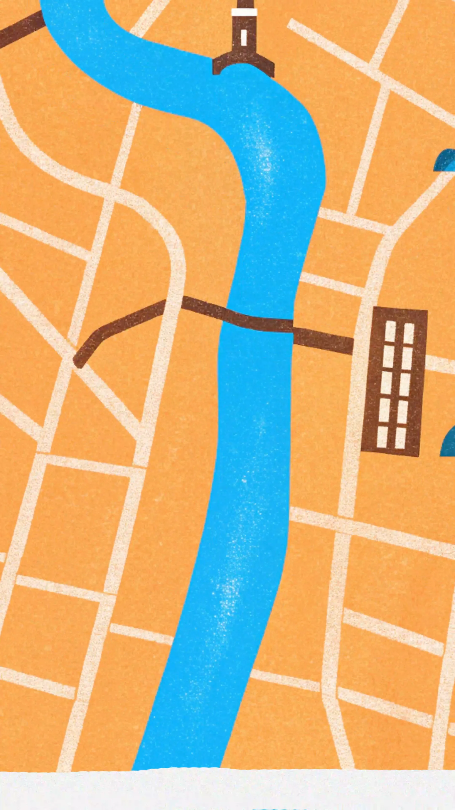

AIGC Title Sequence
Project
An AI-assisted title sequence combining generated visual development with compositing, timing, typography, and motion design in Adobe After Effects.

An AI-assisted title sequence combining generated visual development with compositing, timing, typography, and motion design in Adobe After Effects.